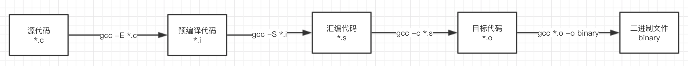

gcc的基本使用简介
gcc 是*unix系统上常用的c代码编译器，编译器做的事情其实像是在翻译，接下来简单介绍下gcc的简单实用方法
首先我们有一个简单的c源代码文件 main.c1
2
3
4
5
int main(int argc, char const *argv[]) {
printf("%s\n", "hello test");
return 0;
}
gcc 对源代码的编译过程如下图

1. gcc常用参数解析
1.1 参数 -o 指定生成文件名称
简单的编译过程 gcc main.c 此时gcc默认会生成可以直接运行的二进制文件 a.out1
2# ./a.out
hello test
如果想要制定生成的文件名称可以使用参数 -o，使用命令 gcc main.c -o main 此时生成的二进制文件名称则为 main
1.2 参数 -E 生成预编译文件
-E 参数生成预编译文件，预编译文件主要处理的是 include define 等宏的字符串替换gcc -E main.c 这个命令生成的数据会显示在屏幕 不会写文件，需要自己将输出流写入文件 gcc -E main.c > main.i
一般惯例会将这个文件后缀定为 .i 文件名 main.i
1.3 参数 -S 生成汇编代码
-S 参数会将文件（源文件 或者 预编译文件）生成为汇编代码 gcc -S main.c 生成文件 main.s
1.4 参数 -c 生成目标文件
-c 参数将文件（汇编代码之前的文件）编译为目标代码，目标代码其实就是二进制代码，只是目标代码缺少对应的依赖库文件以及二进制文件启动需要的代码
目标文件都是 源文件单独对应生成的二进制文件，只是这里的二进制文件缺少依赖，在下一步会处理代码间的依赖关系，这个过程叫 链接
1.5 生成二进制代码
gcc main.o -o main 将目标代码进行链接生成可执行的二进制文件，gcc也可以从源文件编译到二进制可执行文件，只是中间会经历 预编译 -> 汇编 -> 目标文件 的过程
2. 第三方库
以上的过程是简单的一个c源文件，正常项目中会有更多的文件，在编译的过程中全部文件进行编译也不是必须的，因为有些模块是没有变动的，以及项目中也会用其他第三方的代码，
这个时候就需要通过第三方库的形式进行编译，可选的方式有 静态 动态 两种
此时我们需要有两个文件
创建主文件 main.c1
2
3
4
5
6
7
8
void func();
int main(int argc, char const *argv[]) {
func();
return 0;
}
创建依赖文件func.c1
2
3
4
5
6
void func()
{
printf("%s\n", "library func");
}
2.1 动态库
先生成静态库文件 gcc --shared func.c -o libfunc.so ，需要注意输出文件名称 以lib开始 后缀为 .so
将动态库编译进代码 gcc main.c -lfunc -L. -o main，其中 -lfunc 是指定的依赖动态库名称func，-L. 是指定动态库的路径 . 当前路径，不然默认会使用ld配置中的路径.
生成的代码需要与动态库一起使用，不能缺少so文件，如同php的扩展文件一样，好处是减小了代码二进制文件的大小
2.2 静态库
先生成静态库1
2
3
4
gcc -c func.c -o func.o
ar -r libfunc.a func.o
通过ar工具将目标代码生成静态库 lib[name].a 文件
将静态库编译进代码 gcc libfunc.a main.c -L. -o main
静态编译后得到的二进制可执行文件会大，但好处是这个二进制代码不在依赖文件 libfunc.a